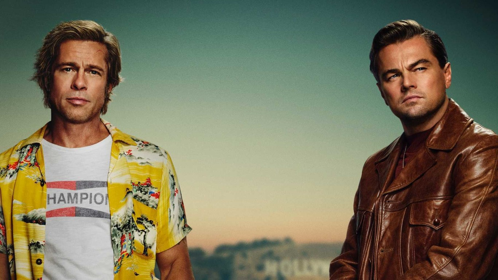

<!DOCTYPE html>
<html lang="es_ES">
<head>
    <meta charset="UTF-8">
    <meta name="viewport" content="width=device-width, initial-scale=1.0">
    <meta name="author" content="Maria Dolores Tarifa">
    <link rel="shortcut icon" href="./assets/imagenes/erase_una_vez.jpeg>
    <title>Erase una vez</title>
</head>
<body>
    <header><h1>ERASE UNA VEZ...EN HOLLYWOOD</h1></header>
    <main>
        <article>
            <h2>Sinopsis</h2>
            <p>Hollywood, años 60. La estrella de un western televisivo, Rick Dalton, intenta amoldarse a los cambios del medio al mismo tiempo que su doble. La vida de Dalton está ligada completamente a Hollywood, y es vecino de la joven y prometedora actriz y modelo Sharon Tate que acaba de casarse con el prestigioso director Roman Polanski.</p>
            <p>‘Érase una vez en… Hollywood’ (2019), en la que reúne a Brad Pitt y Leonardo DiCaprio, actor de series de televisión y su doble en escenas de acción respectivamente, que buscan abrirse camino en el Hollywood de los 60, ha traído a Tarantino 10 nominaciones a los Premios Óscar, entre ellas Mejor película, Mejor director y Mejor Actor y Actor de reparto para los dos actores protagonistas.</p>
            
        </article>
        <section>
            <h2>Reparto</h2>
        <ul>
            <li>Leonardo DiCaprio como Rick Dalton, un actor que protagonizó la serie de televisión wéstern Bounty Law de 1958 a 1963. Su intento de transición al cine no funcionó y en 1969 está luchando por conseguir trabajo, apareciendo como invitado en otros shows mientras considera ir a Italia.</li>
            <li>Brad Pitt como Cliff Booth, doble de Rick y su amigo cercano.</li>
            <li>Margot Robbie como Sharon Tate, actriz embarazada casada con Roman Polanski.</li>
            <li>Emile Hirsch como Jay Sebring, estilista de Hollywood y amigo de Sharon Tate.</li>
            <li>Margaret Qualley como «Pussycat», miembro de la Familia Manson.</li>
            <li>Timothy Olyphant como James Stacy, actor que coprotagonizó la serie de televisión wéstern Lancer, en la que interpretaba a Johnny Madrid Lancer.</li>
            <li>Julia Butters como Trudi Fraser, una niña actriz de la serie Lancer.</li>
            <li>Austin Butler como Charles «Tex» Watson, miembro de la Familia Manson.</li>
            <li>Dakota Fanning como Lynette «Squeaky» Fromme, miembro de la Familia Manson.</li>
            <li>Bruce Dern como George Spahn, un hombre ciego de 80 años que alquilaba su rancho de Los Ángeles. Charles Manson convenció a Spahn para que le permitiera a él y a sus seguidores vivir en el rancho, meses antes de que asesinaran a Sharon Tate y otras seis personas. En lugar de pagar la renta, Manson obligó a sus seguidoras a ir a la cama con el dueño del rancho, y servirles como sus guías visuales (anteriormente iba a ser interpretado por Burt Reynolds, pero este falleció antes de rodar sus escenas).</li>
            <li>Mike Moh como Bruce Lee.</li>
            <li>Luke Perry como Wayne Maunder, actor que coprotagonizó la serie de televisión wéstern Lancer, en la que interpretaba a Scott Lancer. Perry murió el 4 de marzo de 2019, habiendo grabado todas sus escenas.</li>
            <li>Al Pacino como Marvin Schwartz, el agente de Rick Dalton.</li>
            <li>Y otros muchos más...</li>
        </ul>
    </section>
    </main>
</body>
</html>